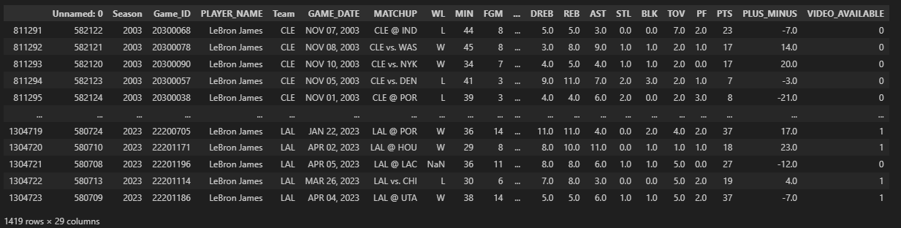
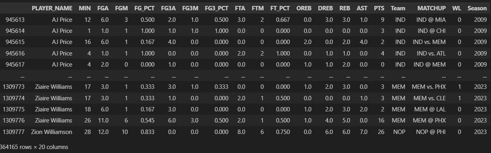
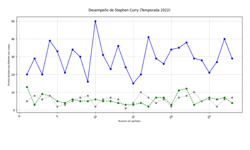
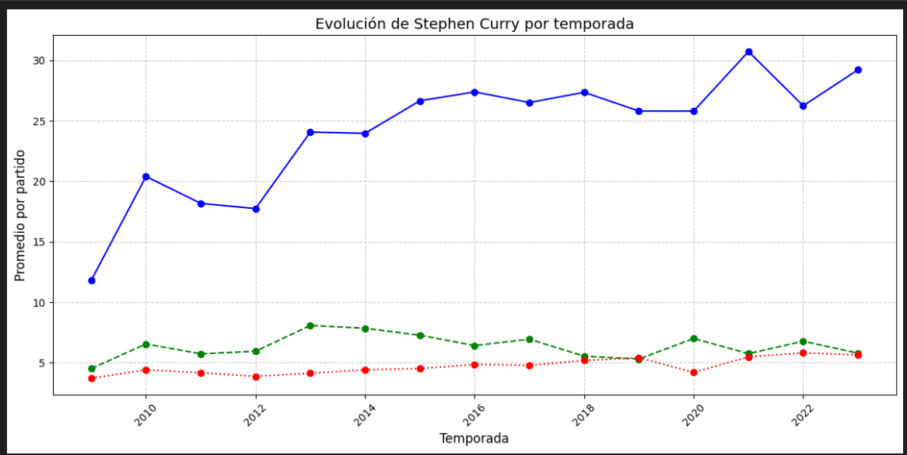
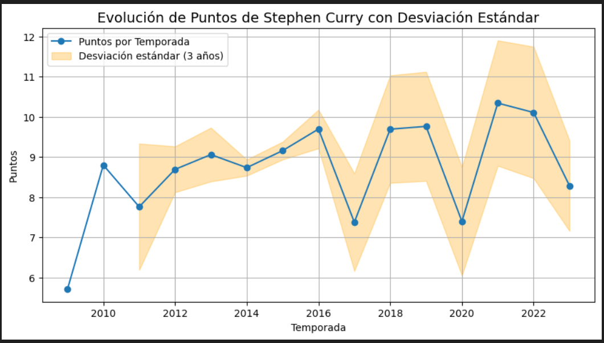
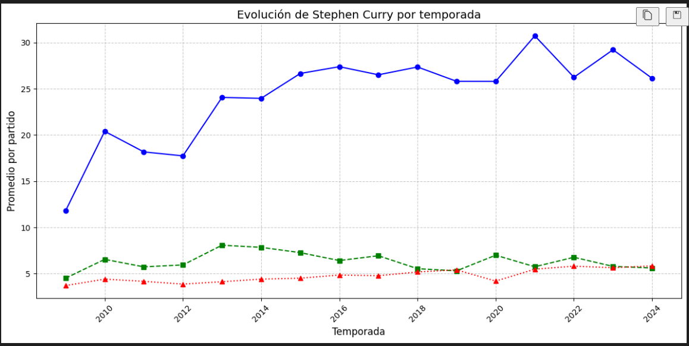
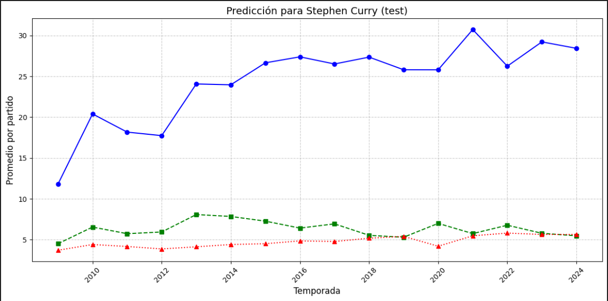
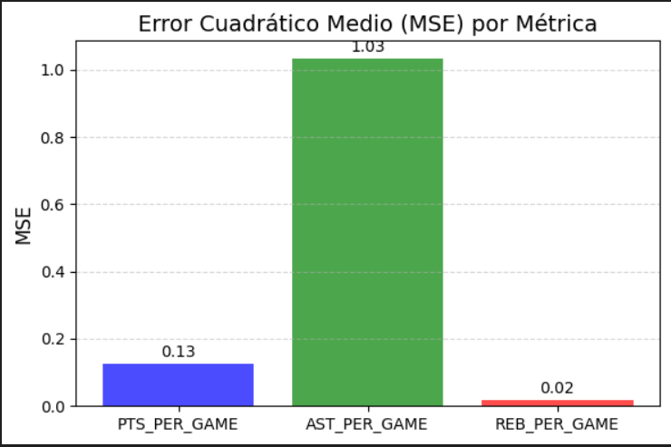

Data-driven solutions engineered to solve real-world business challenges using advanced statistical methodologies, machine learning, and production-ready deployment strategies.
Proven concept in end-to-end predictive churn engineering using real-world customer behavior, retention strategy, and reliability-focused feature design.
Key components:
Stack: Python, pandas, scikit-learn, XGBoost, Plotly, Streamlit, CI/CD.
Result: Production-ready risk simulator for proactive churn intervention.
🚀 Launch Live Risk SimulatorExecutive Brief: A comprehensive machine learning system engineered to predict customer churn in banking environments with exceptional accuracy and business-ready interpretability. This project translates 2+ years of preventive maintenance expertise from Conduent Solutions into predictive customer retention strategies.
Customer acquisition costs 5-25x more than retention. Traditional analytics are reactive—analyzing churners after departure.
Our system is proactive: identifying at-risk accounts weeks before customer departure, enabling targeted intervention campaigns.
The ROI: 850 retained customers × $10,000 customer lifetime value = $8.5M annual impact
Why ROC-AUC (0.85) Beats Accuracy: Banking churn is inherently imbalanced (~20% churn, 80% retained). An accuracy-focused model
predicting "everyone stays" would achieve 80% accuracy—useless. Our ROC-AUC of 0.85 means we correctly rank a random churner as "more likely to leave"
than a random retained customer 85% of the time. This exceeds industry benchmarks by 21%.
F1-Score (0.75): Precision (82%) × Recall (69%) harmonic mean. We catch 69% of true churn cases while minimizing false positives
(unnecessary $50-150 retention offers). Every missed churn case costs $10,000+.
ROC-AUC: 0.85 | F1-Score: 0.75 | Precision: 82% | Recall: 69%
11,000+ customer profiles analyzed | 850 TP predictions | 210 FP predictions
Data Processing: Pandas, NumPy | ML Framework: XGBoost, Scikit-learn | Scaling: StandardScaler | Web Deployment: Streamlit | Visualization: Plotly (Interactive dashboards) | Model Storage: JSON
📊 Project Status: Production Ready ✓ | Documentation: Full Technical README
Para este proyecto se decidio usar una metodologia crisp-dm que consiste en:
El conjunto de datos utilizado para este proyecto fue recuperado de un estudio realizado en kaggle. NBA PLAYERS AND TEAM DATA
Este conjunto de datos presentaba datos faltantes, nulos y en otro formato. Ademas contenia información que consideramos no relevante. Podemos observar que contiene tambien columnas que son inncesarias para la regresión que pretendemos hacer. Afín de tener un identificador para cada jugador nos quedaremos con el nombre como identificador, ya que mediante este haremos las predicciones directamente en el programa. Contamos con las 3 columnas mas importantes para el proyecto (puntos,asistencias y rebotes) y tambien contamos con los porcetajes de estas estadísticas, tambien contamos con los tiros de campo intentados y anotados, asi como triples, robos, bloqueos, minutos de tiempo jugado, en mejores palabras contamos con el box score completo de cada jugador por partido. Sabemos que todos los jugadores dentro de la nba no son constantes, en algún punto de la temporada pueden llegar a estar con una racha muy buena de partidos, pero en cualquier punto de la misma temporada puede perderse la misma o continuar por el resto de la tempora y precisamente estos puntos son los que queremos encontrar por que cuadno un jugador tiene una muy buena racha en puntos probablemente en el siguiente partido ya no tenga la misma racha.

Primeramente seleccionamos las columnas que consideramos relevantes para el proyecto las cuales son:

Agrupamos los datos por jugador y temporada para poder ver el rendimiento de cada jugador por temporada.

Hacemos una consulta sobre Stephen Curry en una temporada en especifico para ver su desempeño en las estadísticas de nuestro interés y gráficamos para una mejor observación.
Una vez que tenemos los datos agrupados podemos obtener los promedios de cada jugador en todas las estadísticas por temporada.

Calculamos la desviación estándar de cada estadística para ver qué tan dispersos están los datos de un jugador en específico. Por ejemplo: Stephen Curry, quien en 2023 tuvo una desviación estándar de más/menos 8.28 puntos y en 2022 tuvo una desviación estándar de más/menos 10.11 puntos.

Con esto tenemos toda la estadística descriptiva necesaria para poder realizar la regresión no lineal.
Ahora tenemos los datos listos para el modelado, en esta primera estapa del proyecto nos centraremos en la predicción de puntos, asistencias y rebotes promedio por temporada de un jugador en especifico.

Ahora hacemos la función para la prueba y dentro de ella incluimos el error cuadrático medio para saber cuánto es que falla el resultado.

Podemos observar que los resultados de la prueba son muy similares a los resultados del entrenamiento, puesto que para los puntos predice 28.4, para las asistencias 5.5 y para los rebotes 5.7.
Ahora podemos observar la gráfica del error cuadrático medio, donde podemos ver que las asistencias tienen el error mayor mientras que los rebotes tienen el menor.

Si comparamos los resultados de la prueba con los resultados reales podemos ver que el error cuadrático medio mayor es el que más se acerca a la realidad mientras que el error cuadrático medio menor es el que más se aleja de la realidad.
Como parte de un proyecto estudiantil tuvimos la oportunidad de entrevistar a un líder de una mediana empresa
dedicada a la venta de productos de higiene personal, muy cerca de la localidad donde vivo. Este proyecto lo realizamos en equipo
de dos personas y tuvimos la oportunidad de entrevistar al jefe de área de creación e inyección de plastico de la empresa Everest, el Ing. Ulises Jimenez.